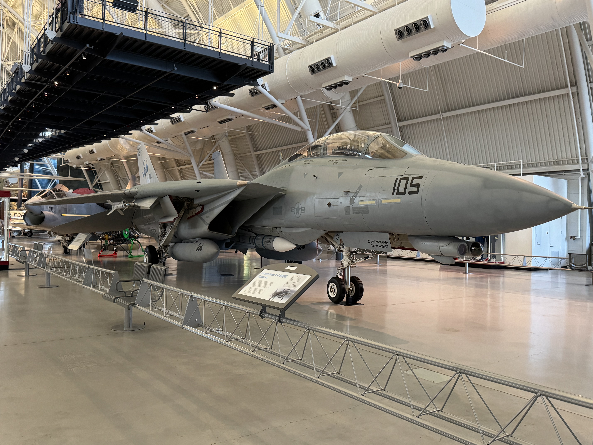
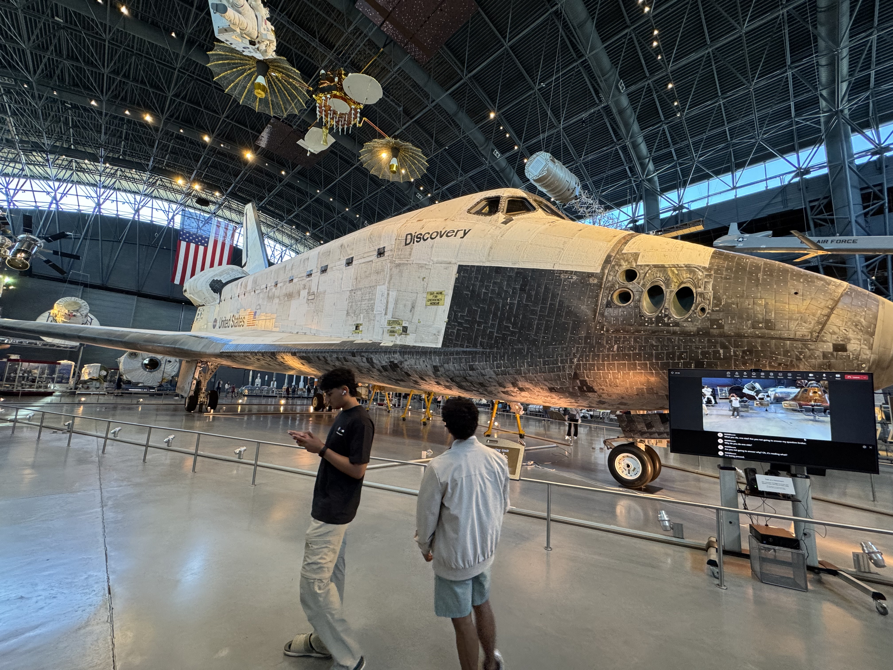
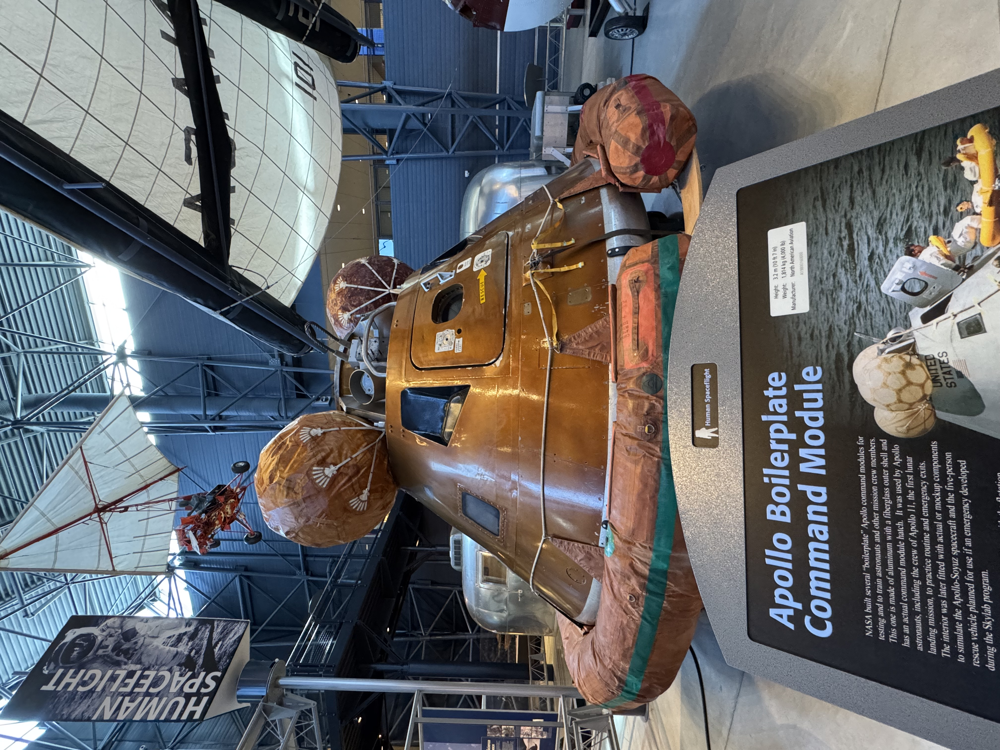
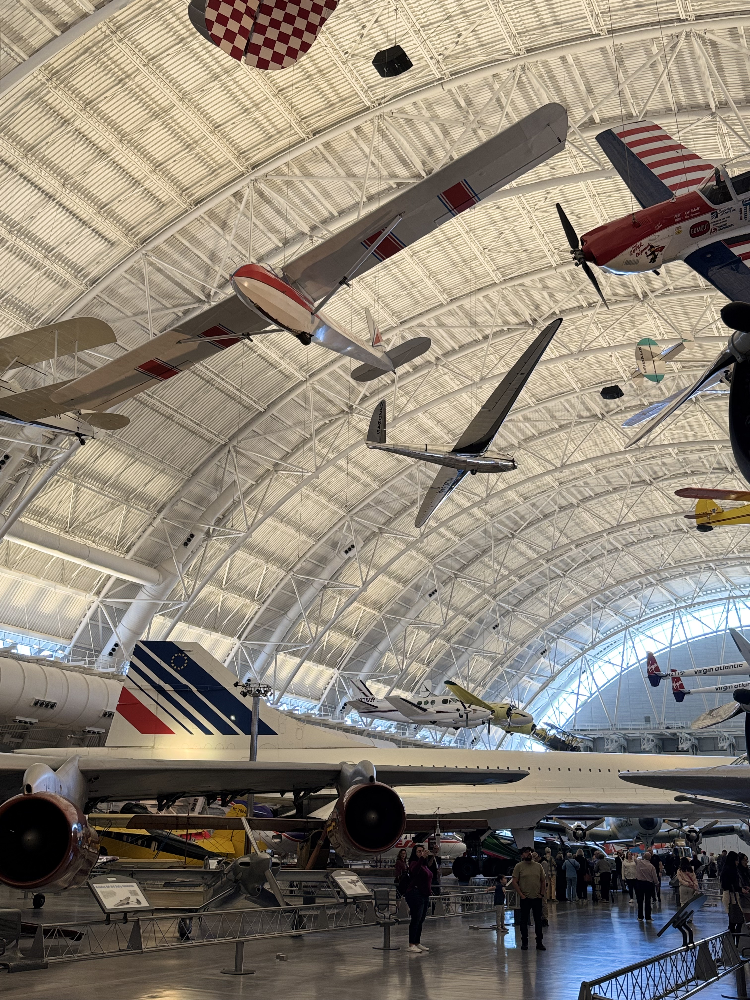

Space Hazy Tour: A Visual Journal from Udvar-Hazy
Introduction
The first time I stepped into the Steven F. Udvar-Hazy Center in Chantilly, Virginia, I felt like I had just walked into a spaceship hangar from a sci-fi movie. Towering above me was the SR-71 Blackbird, cloaked in matte black, as if guarding the secrets of Cold War skies. That’s the moment you realize this isn’t just another museum visit—it’s a launchpad into aviation history.
This journal is part of Thrust & Theory and captures a visual and emotional tour through aviation and aerospace history. It’s divided into three chapters—Stealth & Speed, Space & Ambition, and Wings of the Past—each pairing photography with narrative reflections. Come along for a walk through air and space like you’ve never experienced before.
Stealth & Speed
SR-71 Blackbird

SR-71 Blackbird on display at the main entrance. Image taken by: Vick Maturu
With its razor-sharp frame and stealth-black finish, the Blackbird feels like a myth made real. It's the plane that set world records and slipped past enemy radar at Mach 3—your welcome committee to the center of aviation history.
F-14 Tomcat
F-14 Tomcat in pristine form. Image taken by: Vick Maturu
The Navy’s Cold War-era king of the skies, the Tomcat is known for its variable-sweep wings and Top Gun legacy. Seeing it up close reminds you of how design and danger can intersect in perfect balance.
German Rocket Jet

A relic from WWII, representing early rocket propulsion. Image taken by: Vick Maturu
Scarred by time and urgency, this Nazi-era rocket jet is both haunting and fascinating. You’re reminded how desperate innovation during war accelerated aerospace history in ways we still study today.
Space & Ambition
Space Shuttle Discovery
The retired shuttle Discovery under museum lighting. Image taken by: Vick Maturu
Discovery looms over visitors, blackened tiles and all. It’s hard to grasp the weight—literal and symbolic—of the shuttle era until you’re standing beneath one.
Apollo Command Module
Boilerplate Apollo Command Module on exhibit. Image taken by: Vick Maturu
Though this module never flew, it tells a powerful story: of splashdowns, narrow escapes, and the engineers who got us to the Moon and back. The scorch marks and flotation gear bring reentry drama into sharp relief.
Concorde
British Airways Concorde, nose down for landing configuration. Image taken by: Vick Maturu
Long and sleek, the Concorde dominates the hangar’s side wing. It’s proof that flying faster than sound was not only possible—but once considered the future of commercial travel.
Wings of the Past
WWII Bomber & Fighters

WWII aircraft collection featuring the B-29. Image taken by: Vick Maturu
Surrounded by history, the WWII bomber cluster includes the Enola Gay and its airborne peers. The riveted metal and massive scale contrast powerfully with the smooth lines of modern jets.
Propeller Aircraft

World War II fighter planes preserved with authenticity. Image taken by: Vick Maturu
These fighters are smaller but no less fierce. They tell the story of dogfights, carrier launches, and hands-on flying—before digital cockpits and stealthy coatings changed everything.
Seaplanes

Seaplanes hover overhead in flight formation. Image taken by: Vick Maturu
Hanging from the ceiling, seaplanes capture the romance of a bygone age. Water takeoffs. Jungle rescues. Island landings. Aviation wasn’t just about speed—it was about access.
Conclusion
Each aircraft at the Udvar-Hazy Center is more than a machine—it’s a frozen moment in our climb skyward. From WWII bombers to Space Shuttles, each photo I captured tells a story of human ingenuity and courage. This journal was my way of documenting awe, learning, and inspiration.
So what did I learn? That innovation never sits still, and that flight—whether military, commercial, or exploratory—represents the best of what humans can build. The next time I visit, I’ll bring new questions and a longer lens. Because in a place like this, there’s always another angle worth capturing.